This package comes with a few utility functions for generating specific tables and figures, as well as a function that will generate a static website showing the results for a given condition across all sites.
If you are looking at results for individual scenarios, or desire more customized outputs, it is best to extract the data from the output and build tables or figures to your liking.
Before illustrating these methods, we will get environment set up using the synthetic datasets.
library(champsmortality)
data_dir <- file.path(system.file(package = "champsmortality"), "testdata")
d <- read_and_validate_data(data_dir)
dd <- process_data(d, start_year = 2017, end_year = 2020)
graf <- get_rates_and_fractions(
dd,
condition = "Lower respiratory infections",
cond_name_short = "LRI"
)Here we are looking at rates and fractions for “Lower respiratory infections” for all sites.
All of the functions described in this article can take as input the object returned either from get_rates_and_fractions() or batch_rates_and_fractions(). When using the latter, however, note that the figure and table methods described in this article only make sense if each scenario is looking at the same condition. In fact, the only thing that should vary from one result to another is which site/catchment combinations are being looked at.
Plotting rates and fractions
We can plot crude and adjusted rates (which = "rate") and fractions (which = "frac") along with their credible intervals for our set of results with the following:
plot_rates_fracs(graf, which = "rate", plotly = FALSE)
plot_rates_fracs(graf, which = "frac", plotly = FALSE)
Note here that we are setting plotly=FALSE. The default is TRUE in which case an interactive version of the visualization will be made available.
Overview table
To get a nice-looking overview table that shows the rates and fractions for each scenario along with other useful information, we can do the following:
table_rates_fracs(graf)| Site | Catchment | Adjustment Factor(s) |
Crude CSMF (%) (90% Bayesian CrI) |
Adjusted CSMF (%) (90% Bayesian CrI) |
* All-Cause Mortality Rate |
* Crude CSMR (90% Bayesian CrI) |
* Adjusted CSMR (90% Bayesian CrI) |
|---|---|---|---|---|---|---|---|
| S1 | C11 | none | 17.3 (13.5, 21.8) | 17.3 (13.5, 21.8) | 977 | 169.3 (131.9, 212.7) | 169.3 (131.9, 212.7) |
| S2 | C8 | none | 20.7 (16.3, 25.8) | 20.7 (16.3, 25.8) | 455 | 94.4 (74.1, 117.6) | 94.4 (74.1, 117.6) |
| S3 | C9, C10 | location | 13.1 (10.9, 15.6) | 16.2 (14.5, 18) | 1014 | 132.9 (110.4, 158.4) | 164.2 (147.2, 182.5) |
| S4 | C12 | none | 30.6 (27.8, 33.5) | 30.6 (27.8, 33.5) | 1423 | 434.8 (394.8, 476.4) | 434.8 (394.8, 476.4) |
| S5 | C4, C3, C5 | location | 16.4 (12.1, 21.5) | 43.7 (41.5, 45.9) | 1360 | 222.5 (164.2, 292.6) | 593.6 (563.8, 623.6) |
| S6 | C1, C2 | none | 1.4 (0.5, 3.3) | 1.4 (0.5, 3.3) | 457 | 6.5 (2.4, 15.1) | 6.5 (2.4, 15.1) |
| S7 | C6, C7 | location | 14.5 (12.1, 17.3) | 17 (15.6, 18.6) | 1595 | 232 (192.9, 275.9) | 271.3 (248.1, 295.9) |
| * per 10,000 live births | |||||||
Factor adjustment decision table
To view the p-values and % missing statistics that went into the decision on what factors should be adjusted for in each scenario, we can use table_adjust_decision():
table_adjust_decision(graf)| Potential adjustment factors | ||||||||||||
| Blue: P-value < 0.1 & Missing < 20% , Light blue: P-value < 0.1 | ||||||||||||
| Age | Sex | Education | Season | Location | VA CoD | |||||||
|---|---|---|---|---|---|---|---|---|---|---|---|---|
| MITS P-value (Missing) |
LRI P-value (Missing) |
MITS P-value (Missing) |
LRI P-value (Missing) |
MITS P-value (Missing) |
LRI P-value (Missing) |
MITS P-value (Missing) |
LRI P-value (Missing) |
MITS P-value (Missing) |
LRI P-value (Missing) |
MITS P-value (Missing) |
LRI P-value (Missing) |
|
|
S1: C11 * 2018-2020 |
0.935 (0.0%) |
0.707 (0.0%) |
0.482 (0.0%) |
0.214 (0.0%) |
0.290 (62.6%) |
1.000 (65.8%) |
0.009 (0.0%) |
0.692 (0.0%) |
0.159 (0.2%) |
0.779 (0.0%) |
0.649 (12.1%) |
0.001 (12.0%) |
|
S2: C8 * 2017-2020 |
0.162 (0.0%) |
0.149 (0.0%) |
0.201 (0.3%) |
0.597 (0.5%) |
0.708 (60.1%) |
0.725 (47.7%) |
0.339 (0.0%) |
1.000 (0.0%) |
0.177 (0.2%) |
0.019 (0.0%) |
0.202 (3.8%) |
0.001 (5.7%) |
|
S3: C10, C9 * 2017-2020 |
0.001 (0.0%) |
0.299 (0.0%) |
0.771 (0.2%) |
0.251 (0.2%) |
0.792 (75.3%) |
0.311 (68.3%) |
0.909 (0.0%) |
0.706 (0.0%) |
0.001 (0.5%) |
0.006 (0.2%) |
0.001 (20.3%) |
0.001 (21.5%) |
|
S4: C12 2017-2020 |
0.001 (0.0%) |
0.971 (0.0%) |
0.077 (5.6%) |
0.674 (1.0%) |
0.001 (83.9%) |
0.100 (96.4%) |
0.224 (0.1%) |
0.852 (0.0%) |
0.001 (19.3%) |
0.353 (0.0%) |
0.289 (34.9%) |
0.001 (27.7%) |
|
S5: C3, C4, C5 2017-2020 |
0.001 (0.0%) |
0.487 (0.0%) |
0.307 (34.6%) |
0.679 (0.0%) |
0.001 (25.1%) |
1.000 (65.5%) |
0.385 (0.1%) |
0.357 (0.0%) |
0.001 (10.9%) |
0.001 (0.0%) |
0.001 (32.3%) |
0.001 (8.5%) |
|
S6: C1, C2 * 2017-2020 |
0.001 (0.0%) |
0.668 (0.0%) |
0.489 (0.7%) |
0.600 (0.5%) |
0.956 (56.6%) |
1.000 (57.8%) |
0.011 (0.0%) |
1.000 (0.0%) |
0.001 (0.6%) |
1.000 (0.0%) |
0.001 (12.4%) |
1.000 (5.2%) |
|
S7: C6, C7 2017-2020 |
0.001 (0.0%) |
0.966 (0.0%) |
0.568 (0.5%) |
0.245 (0.8%) |
0.001 (53.5%) |
0.255 (61.8%) |
0.022 (0.0%) |
1.000 (0.0%) |
0.001 (18.1%) |
0.001 (0.0%) |
0.057 (11.4%) |
0.001 (11.1%) |
| * includes catchments with no DSS data — see here for details about the methodology | ||||||||||||
Factor adjustment underlying statistics
We can go into even further detail by looking at the underlying statistics from which the adjustment deciions were being made with the function table_factor_sig_stats(), which can be called for either “mits” or “cond”.
table_factor_sig_stats(graf, which = "mits")| S1 | ||
| C11 * | ||
| Factors |
MITS N = 227 |
non-MITS N = 303 |
|---|---|---|
| n (%) | n (%) | |
| Age P-value: 0.935 , Missing: 0% | ||
| Stillbirth | 75 (33.0) | 96 (31.7) |
| Neonate | 63 (27.8) | 92 (30.4) |
| Infant | 43 (18.9) | 56 (18.5) |
| Child | 46 (20.3) | 59 (19.5) |
| Sex P-value: 0.482 , Missing: 0% | ||
| Female | 100 (44.1) | 143 (47.2) |
| Male | 127 (55.9) | 160 (52.8) |
| Education P-value: 0.29 , Missing: 62.64% | ||
| None | 14 (18.2) | 19 (15.7) |
| Primary | 23 (29.9) | 50 (41.3) |
| Secondary | 33 (42.9) | 38 (31.4) |
| Tertiary | 7 (9.1) | 14 (11.6) |
| Season P-value: 0.009 , Missing: 0% | ||
| Dry | 166 (73.1) | 188 (62.0) |
| Rainy | 61 (26.9) | 115 (38.0) |
| Location P-value: 0.159 , Missing: 0.19% | ||
| Community | 25 (11.0) | 47 (15.6) |
| Facility | 202 (89.0) | 255 (84.4) |
| VA CoD P-value: 0.649 , Missing: 12.08% | ||
| Infection | 70 (35.4) | 84 (31.3) |
| Trauma | 2 (1.0) | 3 (1.1) |
| Other | 126 (63.6) | 181 (67.5) |
| S2 | ||
| C8 * | ||
| Factors |
MITS N = 194 |
non-MITS N = 838 |
|---|---|---|
| n (%) | n (%) | |
| Age P-value: 0.162 , Missing: 0% | ||
| Stillbirth | 70 (36.1) | 302 (36.0) |
| Neonate | 75 (38.7) | 263 (31.4) |
| Infant | 29 (14.9) | 165 (19.7) |
| Child | 20 (10.3) | 108 (12.9) |
| Sex P-value: 0.201 , Missing: 0.29% | ||
| Female | 99 (51.3) | 385 (46.1) |
| Male | 94 (48.7) | 451 (53.9) |
| Education P-value: 0.708 , Missing: 60.08% | ||
| None | 16 (15.8) | 65 (20.9) |
| Primary | 42 (41.6) | 121 (38.9) |
| Secondary | 34 (33.7) | 102 (32.8) |
| Tertiary | 9 (8.9) | 23 (7.4) |
| Season P-value: 0.339 , Missing: 0% | ||
| Dry | 110 (56.7) | 443 (52.9) |
| Rainy | 84 (43.3) | 395 (47.1) |
| Location P-value: 0.177 , Missing: 0.19% | ||
| Community | 44 (22.7) | 231 (27.6) |
| Facility | 150 (77.3) | 605 (72.4) |
| VA CoD P-value: 0.202 , Missing: 3.78% | ||
| Infection | 35 (19.1) | 195 (24.1) |
| Trauma | 1 (0.5) | 14 (1.7) |
| Other | 147 (80.3) | 601 (74.2) |
| S3 | ||
| C10, C9 * | ||
| Factors |
MITS N = 645 |
non-MITS N = 575 |
|---|---|---|
| n (%) | n (%) | |
| Age P-value: <0.001 , Missing: 0% | ||
| Stillbirth | 222 (34.4) | 173 (30.1) |
| Neonate | 260 (40.3) | 186 (32.3) |
| Infant | 72 (11.2) | 97 (16.9) |
| Child | 91 (14.1) | 119 (20.7) |
| Sex P-value: 0.771 , Missing: 0.16% | ||
| Female | 274 (42.5) | 239 (41.6) |
| Male | 370 (57.5) | 335 (58.4) |
| Education P-value: 0.792 , Missing: 75.33% | ||
| None | 39 (19.5) | 21 (20.8) |
| Primary | 67 (33.5) | 37 (36.6) |
| Secondary | 67 (33.5) | 28 (27.7) |
| Tertiary | 27 (13.5) | 15 (14.9) |
| Season P-value: 0.909 , Missing: 0% | ||
| Dry | 320 (49.6) | 283 (49.2) |
| Rainy | 325 (50.4) | 292 (50.8) |
| Location P-value: <0.001 , Missing: 0.49% | ||
| Community | 53 (8.2) | 251 (44.0) |
| Facility | 591 (91.8) | 319 (56.0) |
| VA CoD P-value: <0.001 , Missing: 20.33% | ||
| Infection | 93 (18.9) | 138 (28.7) |
| Trauma | 4 (0.8) | 17 (3.5) |
| Other | 395 (80.3) | 325 (67.7) |
| S4 | ||
| C12 | ||
| Factors |
MITS N = 699 |
non-MITS + DSS-only N = 420 |
|---|---|---|
| n (%) | n (%) | |
| Age P-value: <0.001 , Missing: 0% | ||
| Stillbirth | 189 (27.0) | 138 (32.9) |
| Neonate | 325 (46.5) | 125 (29.8) |
| Infant | 122 (17.5) | 98 (23.3) |
| Child | 63 (9.0) | 59 (14.0) |
| Sex P-value: 0.077 , Missing: 5.63% | ||
| Female | 283 (40.9) | 170 (46.7) |
| Male | 409 (59.1) | 194 (53.3) |
| Education P-value: <0.001 , Missing: 83.91% | ||
| None | 7 (28.0) | 6 (3.9) |
| Primary | 10 (40.0) | 21 (13.5) |
| Secondary | 6 (24.0) | 115 (74.2) |
| Tertiary | 2 (8.0) | 13 (8.4) |
| Season P-value: 0.224 , Missing: 0.09% | ||
| Dry | 517 (74.0) | 324 (77.3) |
| Rainy | 182 (26.0) | 95 (22.7) |
| Location P-value: <0.001 , Missing: 19.3% | ||
| Community | 36 (5.2) | 28 (13.7) |
| Facility | 663 (94.8) | 176 (86.3) |
| VA CoD P-value: 0.289 , Missing: 34.88% | ||
| Infection | 66 (13.1) | 3 (6.8) |
| Trauma | 13 (2.6) | 2 (4.5) |
| Other | 426 (84.4) | 39 (88.6) |
| S5 | ||
| C3, C4, C5 | ||
| Factors |
MITS N = 167 |
non-MITS + DSS-only N = 1,375 |
|---|---|---|
| n (%) | n (%) | |
| Age P-value: <0.001 , Missing: 0% | ||
| Stillbirth | 86 (51.5) | 236 (17.2) |
| Neonate | 56 (33.5) | 196 (14.3) |
| Infant | 9 (5.4) | 316 (23.0) |
| Child | 16 (9.6) | 627 (45.6) |
| Sex P-value: 0.307 , Missing: 34.57% | ||
| Female | 80 (47.9) | 366 (43.5) |
| Male | 87 (52.1) | 476 (56.5) |
| Education P-value: <0.001 , Missing: 25.1% | ||
| None | 12 (21.1) | 788 (71.8) |
| Primary | 24 (42.1) | 261 (23.8) |
| Secondary | 16 (28.1) | 44 (4.0) |
| Tertiary | 5 (8.8) | 5 (0.5) |
| Season P-value: 0.385 , Missing: 0.13% | ||
| Dry | 117 (70.1) | 913 (66.5) |
| Rainy | 50 (29.9) | 460 (33.5) |
| Location P-value: <0.001 , Missing: 10.89% | ||
| Community | 20 (12.0) | 937 (77.6) |
| Facility | 147 (88.0) | 270 (22.4) |
| VA CoD P-value: <0.001 , Missing: 32.3% | ||
| Infection | 15 (9.9) | 38 (34.2) |
| Trauma | 0 (0.0) | 1 (0.9) |
| Other | 136 (90.1) | 72 (64.9) |
| S6 | ||
| C1, C2 * | ||
| Factors |
MITS N = 212 |
non-MITS N = 916 |
|---|---|---|
| n (%) | n (%) | |
| Age P-value: <0.001 , Missing: 0% | ||
| Stillbirth | 106 (50.0) | 393 (42.9) |
| Neonate | 93 (43.9) | 376 (41.0) |
| Infant | 9 (4.2) | 81 (8.8) |
| Child | 4 (1.9) | 66 (7.2) |
| Sex P-value: 0.489 , Missing: 0.71% | ||
| Female | 98 (46.4) | 397 (43.7) |
| Male | 113 (53.6) | 512 (56.3) |
| Education P-value: 0.956 , Missing: 56.56% | ||
| None | 20 (22.5) | 92 (22.9) |
| Primary | 36 (40.4) | 151 (37.7) |
| Secondary | 23 (25.8) | 114 (28.4) |
| Tertiary | 10 (11.2) | 44 (11.0) |
| Season P-value: 0.011 , Missing: 0% | ||
| Dry | 140 (66.0) | 517 (56.4) |
| Rainy | 72 (34.0) | 399 (43.6) |
| Location P-value: <0.001 , Missing: 0.62% | ||
| Community | 8 (3.8) | 416 (45.8) |
| Facility | 204 (96.2) | 493 (54.2) |
| VA CoD P-value: <0.001 , Missing: 12.41% | ||
| Infection | 2 (1.0) | 48 (6.1) |
| Trauma | 0 (0.0) | 30 (3.8) |
| Other | 199 (99.0) | 709 (90.1) |
| S7 | ||
| C6, C7 | ||
| Factors |
MITS N = 500 |
non-MITS + DSS-only N = 1,579 |
|---|---|---|
| n (%) | n (%) | |
| Age P-value: <0.001 , Missing: 0% | ||
| Stillbirth | 131 (26.2) | 161 (10.2) |
| Neonate | 167 (33.4) | 344 (21.8) |
| Infant | 115 (23.0) | 447 (28.3) |
| Child | 87 (17.4) | 627 (39.7) |
| Sex P-value: 0.568 , Missing: 0.48% | ||
| Female | 210 (42.3) | 690 (43.9) |
| Male | 286 (57.7) | 883 (56.1) |
| Education P-value: <0.001 , Missing: 53.49% | ||
| None | 40 (21.1) | 15 (1.9) |
| Primary | 65 (34.2) | 517 (66.5) |
| Secondary | 66 (34.7) | 218 (28.1) |
| Tertiary | 19 (10.0) | 27 (3.5) |
| Season P-value: 0.022 , Missing: 0% | ||
| Dry | 228 (45.6) | 628 (39.8) |
| Rainy | 272 (54.4) | 951 (60.2) |
| Location P-value: <0.001 , Missing: 18.13% | ||
| Community | 113 (22.6) | 527 (43.8) |
| Facility | 387 (77.4) | 675 (56.2) |
| VA CoD P-value: 0.057 , Missing: 11.39% | ||
| Infection | 149 (33.6) | 51 (31.1) |
| Trauma | 5 (1.1) | 7 (4.3) |
| Other | 289 (65.2) | 106 (64.6) |
table_factor_sig_stats(graf, which = "cond")| S1 | ||
| C11 * | ||
| Factors |
LRI+ N = 39 |
LRI- N = 186 |
|---|---|---|
| n (%) | n (%) | |
| Age P-value: 0.707 , Missing: 0% | ||
| Stillbirth | 10 (25.6) | 63 (33.9) |
| Neonate | 11 (28.2) | 52 (28.0) |
| Infant | 8 (20.5) | 35 (18.8) |
| Child | 10 (25.6) | 36 (19.4) |
| Sex P-value: 0.214 , Missing: 0% | ||
| Female | 21 (53.8) | 78 (41.9) |
| Male | 18 (46.2) | 108 (58.1) |
| Education P-value: 1 , Missing: 65.78% | ||
| None | 2 (15.4) | 12 (18.8) |
| Primary | 4 (30.8) | 19 (29.7) |
| Secondary | 6 (46.2) | 27 (42.2) |
| Tertiary | 1 (7.7) | 6 (9.4) |
| Season P-value: 0.692 , Missing: 0% | ||
| Dry | 30 (76.9) | 134 (72.0) |
| Rainy | 9 (23.1) | 52 (28.0) |
| Location P-value: 0.779 , Missing: 0% | ||
| Community | 5 (12.8) | 20 (10.8) |
| Facility | 34 (87.2) | 166 (89.2) |
| VA CoD P-value: <0.001 , Missing: 12% | ||
| Infection | 27 (75.0) | 43 (26.5) |
| Trauma | 0 (0.0) | 2 (1.2) |
| Other | 9 (25.0) | 117 (72.2) |
| S2 | ||
| C8 * | ||
| Factors |
LRI+ N = 40 |
LRI- N = 153 |
|---|---|---|
| n (%) | n (%) | |
| Age P-value: 0.149 , Missing: 0% | ||
| Stillbirth | 18 (45.0) | 51 (33.3) |
| Neonate | 17 (42.5) | 58 (37.9) |
| Infant | 2 (5.0) | 27 (17.6) |
| Child | 3 (7.5) | 17 (11.1) |
| Sex P-value: 0.597 , Missing: 0.52% | ||
| Female | 19 (47.5) | 80 (52.6) |
| Male | 21 (52.5) | 72 (47.4) |
| Education P-value: 0.725 , Missing: 47.67% | ||
| None | 2 (12.5) | 14 (16.5) |
| Primary | 9 (56.2) | 33 (38.8) |
| Secondary | 4 (25.0) | 30 (35.3) |
| Tertiary | 1 (6.2) | 8 (9.4) |
| Season P-value: 1 , Missing: 0% | ||
| Dry | 23 (57.5) | 86 (56.2) |
| Rainy | 17 (42.5) | 67 (43.8) |
| Location P-value: 0.019 , Missing: 0% | ||
| Community | 15 (37.5) | 29 (19.0) |
| Facility | 25 (62.5) | 124 (81.0) |
| VA CoD P-value: <0.001 , Missing: 5.7% | ||
| Infection | 20 (57.1) | 15 (10.2) |
| Trauma | 1 (2.9) | 0 (0.0) |
| Other | 14 (40.0) | 132 (89.8) |
| S3 | ||
| C10, C9 * | ||
| Factors |
LRI+ N = 72 |
LRI- N = 477 |
|---|---|---|
| n (%) | n (%) | |
| Age P-value: 0.299 , Missing: 0% | ||
| Stillbirth | 31 (43.1) | 163 (34.2) |
| Neonate | 21 (29.2) | 192 (40.3) |
| Infant | 9 (12.5) | 54 (11.3) |
| Child | 11 (15.3) | 68 (14.3) |
| Sex P-value: 0.251 , Missing: 0.18% | ||
| Female | 35 (48.6) | 196 (41.2) |
| Male | 37 (51.4) | 280 (58.8) |
| Education P-value: 0.311 , Missing: 68.31% | ||
| None | 2 (11.1) | 32 (20.5) |
| Primary | 4 (22.2) | 56 (35.9) |
| Secondary | 8 (44.4) | 49 (31.4) |
| Tertiary | 4 (22.2) | 19 (12.2) |
| Season P-value: 0.706 , Missing: 0% | ||
| Dry | 38 (52.8) | 239 (50.1) |
| Rainy | 34 (47.2) | 238 (49.9) |
| Location P-value: 0.006 , Missing: 0.18% | ||
| Community | 12 (16.7) | 29 (6.1) |
| Facility | 60 (83.3) | 447 (93.9) |
| VA CoD P-value: <0.001 , Missing: 21.49% | ||
| Infection | 41 (70.7) | 37 (9.9) |
| Trauma | 1 (1.7) | 3 (0.8) |
| Other | 16 (27.6) | 333 (89.3) |
| S4 | ||
| C12 | ||
| Factors |
LRI+ N = 213 |
LRI- N = 484 |
|---|---|---|
| n (%) | n (%) | |
| Age P-value: 0.971 , Missing: 0% | ||
| Stillbirth | 56 (26.3) | 133 (27.5) |
| Neonate | 101 (47.4) | 222 (45.9) |
| Infant | 36 (16.9) | 86 (17.8) |
| Child | 20 (9.4) | 43 (8.9) |
| Sex P-value: 0.674 , Missing: 1% | ||
| Female | 83 (39.5) | 199 (41.5) |
| Male | 127 (60.5) | 281 (58.5) |
| Education P-value: 0.1 , Missing: 96.41% | ||
| None | 2 (20.0) | 5 (33.3) |
| Primary | 7 (70.0) | 3 (20.0) |
| Secondary | 1 (10.0) | 5 (33.3) |
| Tertiary | 0 (0.0) | 2 (13.3) |
| Season P-value: 0.852 , Missing: 0% | ||
| Dry | 156 (73.2) | 359 (74.2) |
| Rainy | 57 (26.8) | 125 (25.8) |
| Location P-value: 0.353 , Missing: 0% | ||
| Community | 8 (3.8) | 28 (5.8) |
| Facility | 205 (96.2) | 456 (94.2) |
| VA CoD P-value: <0.001 , Missing: 27.69% | ||
| Infection | 38 (28.6) | 28 (7.5) |
| Trauma | 4 (3.0) | 9 (2.4) |
| Other | 91 (68.4) | 334 (90.0) |
| S5 | ||
| C3, C4, C5 | ||
| Factors |
LRI+ N = 27 |
LRI- N = 138 |
|---|---|---|
| n (%) | n (%) | |
| Age P-value: 0.487 , Missing: 0% | ||
| Stillbirth | 13 (48.1) | 71 (51.4) |
| Neonate | 8 (29.6) | 48 (34.8) |
| Infant | 3 (11.1) | 6 (4.3) |
| Child | 3 (11.1) | 13 (9.4) |
| Sex P-value: 0.679 , Missing: 0% | ||
| Female | 14 (51.9) | 65 (47.1) |
| Male | 13 (48.1) | 73 (52.9) |
| Education P-value: 1 , Missing: 65.45% | ||
| None | 2 (28.6) | 10 (20.0) |
| Primary | 3 (42.9) | 21 (42.0) |
| Secondary | 2 (28.6) | 14 (28.0) |
| Tertiary | 0 (0.0) | 5 (10.0) |
| Season P-value: 0.357 , Missing: 0% | ||
| Dry | 17 (63.0) | 100 (72.5) |
| Rainy | 10 (37.0) | 38 (27.5) |
| Location P-value: <0.001 , Missing: 0% | ||
| Community | 11 (40.7) | 8 (5.8) |
| Facility | 16 (59.3) | 130 (94.2) |
| VA CoD P-value: <0.001 , Missing: 8.48% | ||
| Infection | 11 (45.8) | 4 (3.1) |
| Trauma | 0 (0.0) | 0 (0.0) |
| Other | 13 (54.2) | 123 (96.9) |
| S6 | ||
| C1, C2 * | ||
| Factors |
LRI+ N = 3 |
LRI- N = 208 |
|---|---|---|
| n (%) | n (%) | |
| Age P-value: 0.668 , Missing: 0% | ||
| Stillbirth | 1 (33.3) | 105 (50.5) |
| Neonate | 2 (66.7) | 90 (43.3) |
| Infant | 0 (0.0) | 9 (4.3) |
| Child | 0 (0.0) | 4 (1.9) |
| Sex P-value: 0.6 , Missing: 0.47% | ||
| Female | 2 (66.7) | 96 (46.4) |
| Male | 1 (33.3) | 111 (53.6) |
| Education P-value: 1 , Missing: 57.82% | ||
| None | 0 (0.0) | 20 (22.5) |
| Primary | 0 (0.0) | 36 (40.4) |
| Secondary | 0 (0.0) | 23 (25.8) |
| Tertiary | 0 (0.0) | 10 (11.2) |
| Season P-value: 1 , Missing: 0% | ||
| Dry | 2 (66.7) | 137 (65.9) |
| Rainy | 1 (33.3) | 71 (34.1) |
| Location P-value: 1 , Missing: 0% | ||
| Community | 0 (0.0) | 8 (3.8) |
| Facility | 3 (100.0) | 200 (96.2) |
| VA CoD P-value: 1 , Missing: 5.21% | ||
| Infection | 0 (0.0) | 2 (1.0) |
| Trauma | 0 (0.0) | 0 (0.0) |
| Other | 3 (100.0) | 195 (99.0) |
| S7 | ||
| C6, C7 | ||
| Factors |
LRI+ N = 72 |
LRI- N = 423 |
|---|---|---|
| n (%) | n (%) | |
| Age P-value: 0.966 , Missing: 0% | ||
| Stillbirth | 17 (23.6) | 112 (26.5) |
| Neonate | 25 (34.7) | 141 (33.3) |
| Infant | 17 (23.6) | 98 (23.2) |
| Child | 13 (18.1) | 72 (17.0) |
| Sex P-value: 0.245 , Missing: 0.81% | ||
| Female | 35 (48.6) | 171 (40.8) |
| Male | 37 (51.4) | 248 (59.2) |
| Education P-value: 0.255 , Missing: 61.82% | ||
| None | 7 (38.9) | 33 (19.3) |
| Primary | 4 (22.2) | 61 (35.7) |
| Secondary | 5 (27.8) | 60 (35.1) |
| Tertiary | 2 (11.1) | 17 (9.9) |
| Season P-value: 1 , Missing: 0% | ||
| Dry | 33 (45.8) | 192 (45.4) |
| Rainy | 39 (54.2) | 231 (54.6) |
| Location P-value: <0.001 , Missing: 0% | ||
| Community | 31 (43.1) | 82 (19.4) |
| Facility | 41 (56.9) | 341 (80.6) |
| VA CoD P-value: <0.001 , Missing: 11.11% | ||
| Infection | 45 (69.2) | 104 (27.7) |
| Trauma | 0 (0.0) | 5 (1.3) |
| Other | 20 (30.8) | 266 (70.9) |